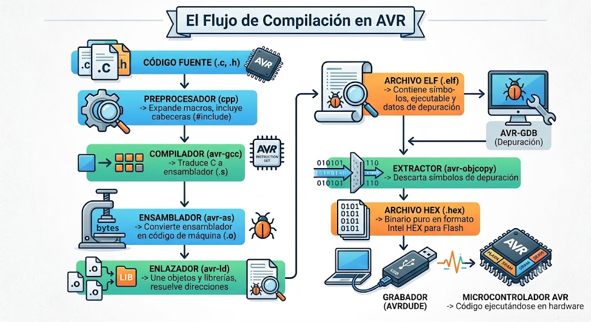

PROGRAMACIÓN BARE-METAL DE μC AVR
Dominando la Toolchain GNU desde la línea de comandos
INTRODUCCIÓN
Desarrollar aplicaciones para un microcontrolador AVR desde la línea de comandos no consiste en utilizar un único programa, sino un conjunto de herramientas especializadas que trabajan de forma coordinada. Cada una cumple una función específica dentro del proceso de desarrollo: unas traducen el código fuente a lenguaje máquina, otras generan los archivos finales en el formato adecuado para la memoria del microcontrolador y otras permiten depurar la aplicación.
A este conjunto de herramientas se le denomina toolchain o cadena de herramientas. En el caso de los microcontroladores AVR, la más utilizada es la GNU AVR Toolchain, considerada el estándar de facto para el desarrollo bare-metal sobre esta arquitectura. Su popularidad se debe a que es libre, multiplataforma y está ampliamente documentada. Además, constituyen las herramientas que corren debajo de numerosos entornos de desarrollo actuales y clásicos como Arduino, PlatformIO, Eclipse, Microchip Studio e incluso el compilador MPLAB XC8 de Microchip en su modo para AVR.
Para programar microcontroladores AVR con Raspberry Pi 5 desde la línea de comandos utilizaremos la Toolchain de GNU para AVR, una colección de herramientas y librerías usadas para crear programas para microcontroladores AVR.
1. ¿QUÉ ES UNA TOOLCHAIN?
Una toolchain (cadena de herramientas) es un conjunto de programas independientes que trabajan de forma secuencial para transformar el código fuente escrito por el desarrollador en un archivo de firmware ejecutable por la unidad de procesamiento del microcontrolador.
En una toolchain cada herramienta realiza una tarea muy concreta y entrega su resultado como entrada a la siguiente herramienta de la cadena; los programas que forman parte de la cadena están diseñados para complementarse y automatizar por completo el proceso de construcción del software .
Toolchain vs. Toolkit
Aunque ambos términos suelen confundirse, no significan lo mismo
En la documentación de GCC, LLVM, ARM, Microchip, etc., toolchain suele referirse solo a la cadena de compilación, es decir, a las herramientas que generan el ejecutable.
Las herramientas que escriben ese ejecutable en la memoria Flash suelen llamarse:
- Programming tools
- Flashing tools
- Debug tools
- Programming utilities
- Toolchain (cadena de herramientas): Es el conjunto específico de programas que intervienen directamente en la fabricación del archivo binario final. Existe un flujo de trabajo estrictamente definido donde no se puede alterar el orden de los pasos ni omitir una etapa sin romper el proceso de construcción.
- Toolkit (kit de herramientas): Es una colección más amplia de utilidades que ayudan al desarrollo pero que no forman una cadena secuencial obligatoria (por ejemplo: analizadores de consumo, herramientas de configuración gráfica de pines o generadores de código).
Por ejemplo, un fabricante puede distribuir un toolkit de desarrollo que incluya de forma modular:
- Un editor de código o IDE.
- Un simulador de circuitos.
- Un analizador lógico.
- Un software de grabación de firmware.
- Un monitor serie para telemetría.
- Un depurador en tiempo real.
Todas estas aplicaciones pertenecen al mismo kit de desarrollo, pero no forman parte de la cadena secuencial de procesamiento del código fuente.
El flujo esencial de una Toolchain
Sin importar la arquitectura del chip, el flujo sigue siempre este orden:

2. LA TOOLCHAIN PARA AVR EN ENTORNO LINUX (RASPBERRY PI 5)
Para desarrollar firmware desde una Raspberry Pi 5, destinado a microcontroladores AVR, como los Atmega y los Attyni, es fundamental comprender la diferencia entre el entorno nativo y el entorno de compilación cruzada (cross-compilation).
El compilador nativo en linux y Pi5. GCC
En sistemas Linux, gcc (GNU Compiler Collection) es el compilador estándar y nativo principal. Este se encarga de compilar programas que se ejecutan directamente en la arquitectura de la Raspberry Pi 5 (ARM64). Sin embargo, este comando nativo no puede generar código binario ejecutable para un microcontrolador AVR, ya que este último utiliza una arquitectura RISC totalmente distinta.
El compilador cruzado para linux y Pi5
Para programar microcontroladores AVR desde la línea de comandos utilizaremos la GNU AVR Toolchain, una toolchain de compilación cruzada específica para microcontroladores AVR.
Para ello, necesitamos instalar avr-gcc, junto con las utilidades GNU contenidades en binutils-avr, la librería de soporte avr-libc y el paquete de transferencia de firmware hacia el microcontrolador, avrdude.
La gran mayoría de sus herramientas son adaptaciones de las herramientas clásicas del software libre desarrolladas por el proyecto GNU (www.gnu.org) patrocinado por la Free Software Foundation, y que han sido modificadas específicamente para entender la arquitectura AVR e incluyen los siguientes paquetes:
AVR-GCC
Es un Compilador de C y C++ para microcontroladores AVR.
- Traduce el código fuente a código objeto.
- Es una versión del famoso GNU Compiler Collection (
GCC). - El motor del compilador es 100% de GNU.
Binutils para AVR
Todas sus herramientas pertenecen al proyecto GNU Binutils. Son las utilidades esenciales para manipular código binario, e incluyen:
avr-as(ensamblador)avr-ld(enlazador)avr-ar(bibliotecas)avr-objcopy(genera archivosHEX)avr-objdump(desensamblado)avr-size(tamaño del programa)avr-nm, entre otras.
avr-libc
Biblioteca estándar del lenguaje C para AVR.
- Proporciona funciones, macros y archivos de cabecera específicos del hardware, como
<avr/io.h>y<util/delay.h>. - Fue desarrollada y sigue siendo mantenida por un grupo independiente de desarrolladores voluntarios de la comunidad de software libre, actualmente en plataformas como GitHub, para llenar el vacío de las funciones básicas de C en estos micros.
AVR-GDB
Depurador de aplicaciones.
- Permite ejecutar el programa paso a paso, inspeccionar registros, memoria y variables cuando se dispone de un depurador de hardware compatible.
- Se basa en
GDB(GNU Debugger), el depurador estándar del proyecto GNU.
La programación o grabado del firmware en el chip completa el flujo de trabajo del desarrollador en la línea de comandos. En la cadena de herramientas GNU AVR, esta tarea se delega a utilidades externas de despliegue como AVRDUDE, las cuales son independientes de la toolchain de compilación GNU.
AVRDUDE
Programa el microcontrolador.
- Graba el archivo
.hexen la memoria Flash y verifica que la programación se haya realizado correctamente. - El nombre significa AVR Downloader/Uploader. Es un proyecto completamente independiente y de código abierto. Hoy en día es mantenido por una comunidad global de entusiastas y desarrolladores de sistemas embebidos.
Make (opcional, pero muy recomendable)
- Es GNU Make, la herramienta por excelencia para automatizar la compilación mediante archivos
Makefile. - Evita ejecutar manualmente cada comando de la toolchain.

3. INSTALACIÓN DE LA GNU AVR TOOLCHAIN Y AVRDUDE EN ENTORNO LINUX (RASPBERRY PI 5)
3.1. Actualización de los índices de paquetes del sistema
Antes de instalar cualquier paquete, es obligatorio actualizar las listas de los repositorios para asegurar que el gestor de paquetes de Debian/Raspberry Pi OS descargue las versiones compatibles más recientes de la Toolchain.
sudo apt update && sudo apt upgrade -yPara comprobar que el proceso de actualización finalizó correctamente sin errores en segundo plano, puede evaluar la variable de estado de salida del shell con el siguiente comando inmediatamente después de que termine la ejecución:
echo $?Si la terminal devuelve un valor de 0, significa que el sistema se ha actualizado correctamente. Cualquier valor distinto de cero indica un fallo o interrupción en el gestor de paquetes.
3.2. Verificación y preparación del entorno nativo (Build-Essential)
Aunque gcc nativo no compila para AVR, la instalación de las herramientas de compilación de la Raspberry Pi proporciona utilidades de enlazado, cabeceras del sistema y herramientas de gestión de binarios necesarias como base.
En entornos de desarrollo basados en Debian, no se recomienda instalar el compilador de forma aislada. Lo óptimo es validar la presencia del metapaquete build-essential, el cual agrupa de forma automática el compilador de C (gcc), el de C++ (g++), el gestor de automatización make y las librerías de desarrollo nativas fundamentales (libc6-dev).
Para verificar si el compilador nativo básico se encuentra en el sistema, ejecute:
gcc --versionSi el sistema tiene el compilador instalado, se imprimirá un mensaje parecido al siguiente:
gcc (Debian 12.2.0-14) 12.2.0;
Copyright (C) 2022 Free Software Foundation, Inc.
Para conocer la ruta exacta donde se aloja este binario ejecutable, emplee el comando which:
which gccPor regla general, la salida estándar devolverá la ruta absoluta: /usr/bin/gcc.
Si el sistema operativo responde con un error del tipo "command not found", el paquete no está presente.
Método recomendado: Verificación del metapaquete build-essential
Ejecute la herramienta de consultas de Debian filtrando por el paquete requerido:
dpkg -l | grep build-essentialSi el paquete ya está instalado en la Raspberry Pi 5, la terminal mostrará un registro con el estado ii (installs ok, installed):
ii build-essential 12.9 arm64 Informational list of build-essential packagesEn caso de que el comando no devuelva ninguna línea de texto, el entorno de compilación base está ausente. Debe instalarlo inmediatamente ejecutando:
sudo apt update && sudo apt install build-essential -y3.3. Instalación de la GNU AVR Toolchain y el software de programación
Una vez garantizado el entorno base, se procede con la instalación de las cuatro herramientas clave para el desarrollo embebido AVR:
gcc-avr: El compilador cruzado que traduce código fuente C/C++ a instrucciones entendibles por el procesador AVR.avr-libc: La librería estándar de C modificada específicamente para microcontroladores AVR (provee funciones críticas como el manejo de registros de E/S, interrupciones y retardos de tiempo).binutils-avr: Conjunto de herramientas utilitarias encargadas de tareas como el ensamblado (avr-as), el enlazado de objetos (avr-ld) y la conversión de formatos binarios a archivos legibles por programadores como el formato Intel HEX (avr-objcopy).avrdude: El software encargado de interactuar mediante protocolos serie o USB con los programadores físicos (como USBAsp, ArduinoISP o AVRISP mkII) para descargar el archivo comprimido .hex dentro de la memoria Flash del microcontrolador.
En los repositorios oficiales de Debian, el paquete del compilador se invoca formalmente como gcc-avr. Instale toda la suite con el siguiente comando unificado:
sudo apt install gcc-avr avr-libc binutils-avr avrdude -y3.4. Comprobación y auditoría técnica de los componentes instalados
Una vez completada la descarga e instalación, es crucial verificar de manera analítica que cada binario y las librerías se hayan posicionado correctamente en las rutas del sistema y respondan de manera adecuada.
3.4.1. Verificación del compilador cruzado (avr-gcc)
Para comprobar que el compilador cruzado está operativo y reconocer su versión de compilación, ejecute:
avr-gcc --versionDetermine la localización exacta del binario ejecutable para certificar que se encuentra mapeado dentro de las variables de entorno del sistema ($PATH):
which avr-gccLa salida estándar esperada en sistemas operativos limpios debe apuntar a la ruta: /usr/bin/avr-gcc.
3.4.2. Verificación de la estructura de librerías y cabeceras (avr-libc)
A diferencia de los programas normales, las cabeceras de avr-libc deben estar ubicadas en un directorio aislado para que el compilador cruzado las localice durante la fase de preprocesamiento. Utilice el comando ls para auditar el directorio raíz de inclusión de AVR:
ls /usr/lib/avr/include
El sistema debe listar carpetas troncales como avr/ y util/, así como archivos de cabecera estándar indispensables, por ejemplo, stdio.h.
Para verificar las librerías de temporización e instrucciones de retardo de hardware, que son críticas en sistemas embebidos, se debe constatar la existencia del archivo de cabecera delay.h dentro de la subcarpeta de utilidades mediante el siguiente comando:
ls /usr/lib/avr/include/util3.4.3. Verificación de las utilidades de binarios (GNU Binutils para AVR)
Para asegurar que las herramientas de bajo nivel para manipulación de binarios (como el extractor de símbolos o el conversor de objetos) se instalaron correctamente, audite el estado del paquete mediante el gestor de bajo nivel:
dpkg -l binutils-avr
Para un control de calidad exhaustivo y automatizado de la Toolchain, se puede comprobar si cada una de las herramientas individuales empaquetadas dentro de binutils-avr en la ruta de ejecutables responde correctamente al llamado del sistema operativo. Ejecute el siguiente bucle en Bash:
for cmd in $(dpkg -L binutils-avr | grep '^/usr/bin/'); do $cmd --version | head -n 1; doneEste comando iterará sobre cada binario instalado (como avr-objcopy, avr-size, avr-nm), imprimiendo únicamente la primera línea de su respuesta técnica para validar que no existan librerías dinámicas rotas.
# Una respuesta típica es la siguiente
o $cmd --version | head -n 1; done
GNU addr2line (GNU Binutils) 2.43.90.20250122
GNU c++filt (GNU Binutils) 2.43.90.20250122
GNU elfedit (GNU Binutils) 2.43.90.20250122
GNU gprof (GNU Binutils) 2.43.90.20250122
GNU size (GNU Binutils) 2.43.90.20250122
GNU strings (GNU Binutils) 2.43.90.20250122
GNU ar (GNU Binutils) 2.43.90.20250122
Ensamblador (GNU Binutils) 2.43.90.20250122 de GNU
GNU ld (GNU Binutils) 2.43.90.20250122
GNU ld (GNU Binutils) 2.43.90.20250122
GNU nm (GNU Binutils) 2.43.90.20250122
GNU objcopy (GNU Binutils) 2.43.90.20250122
GNU objdump (GNU Binutils) 2.43.90.20250122
GNU ranlib (GNU Binutils) 2.43.90.20250122
GNU readelf (GNU Binutils) 2.43.90.20250122
GNU strip (GNU Binutils) 2.43.90.20250122
3.4.4. Verificación del software de transferencia (avrdude)
Finalmente, compruebe que la herramienta de flasheo esté operativa y cargue de forma correcta sus archivos de configuración de hardware predeterminados (avrdude.conf):
avrdude -vEste comando detallado mostrará en la terminal la versión de software activa y un listado exhaustivo de todos los programadores e interfaces de comunicación soportados de manera nativa, confirmando la compatibilidad con dispositivos de desarrollo populares como usbasp, clones directos USBasp, y configuraciones de depuración embebida como arduinoisp.
Valide la ruta de instalación del binario con:
which avrdudeEl sistema devolverá la ruta estandarizada de operación: /usr/bin/avrdude.